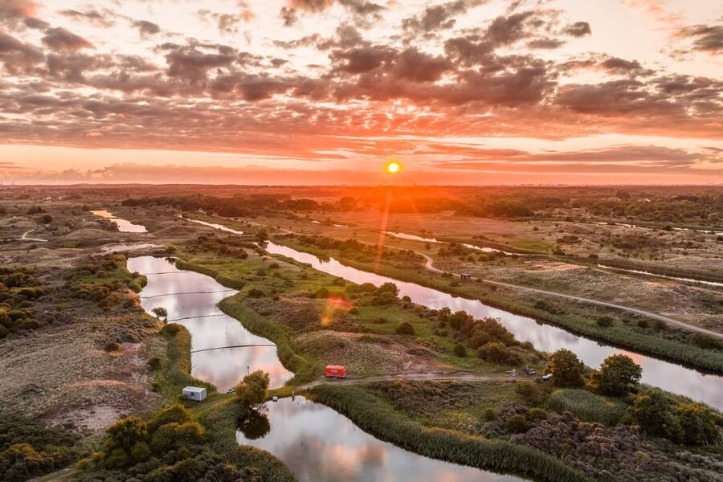
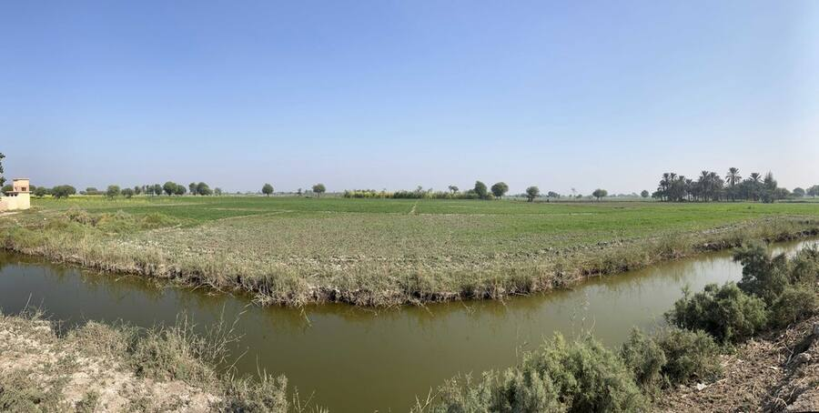
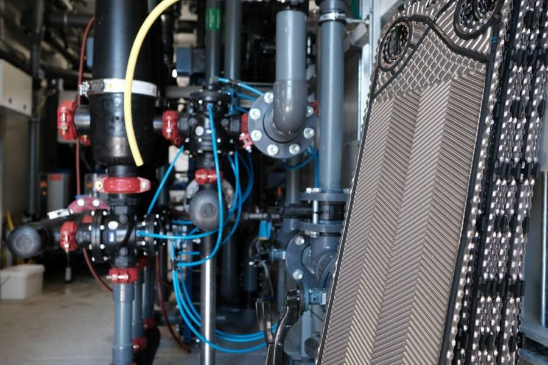
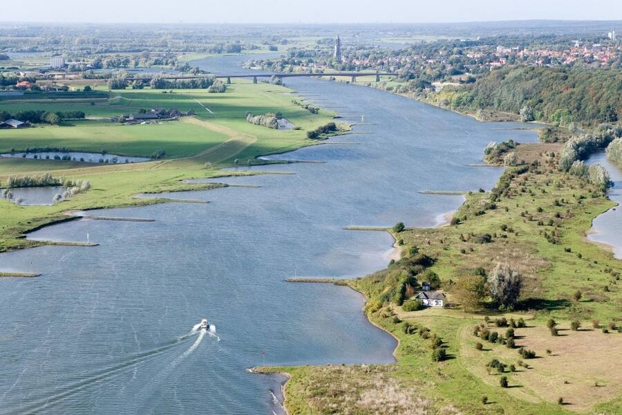
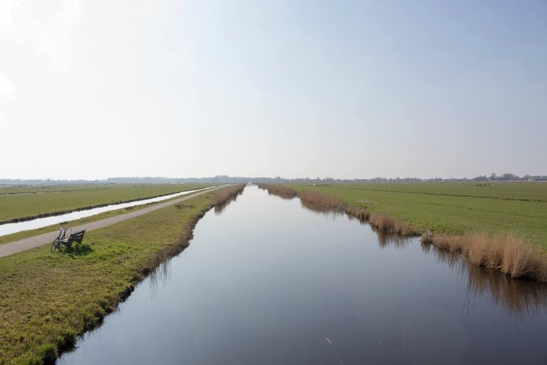
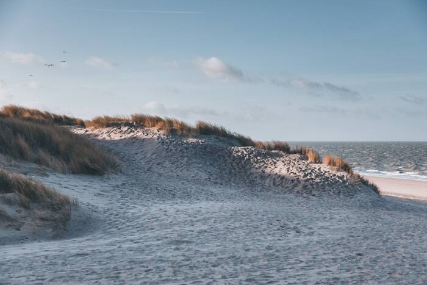
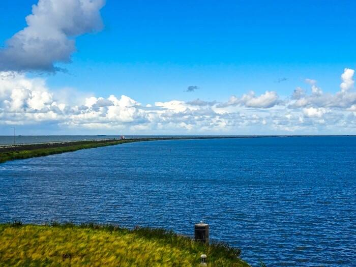
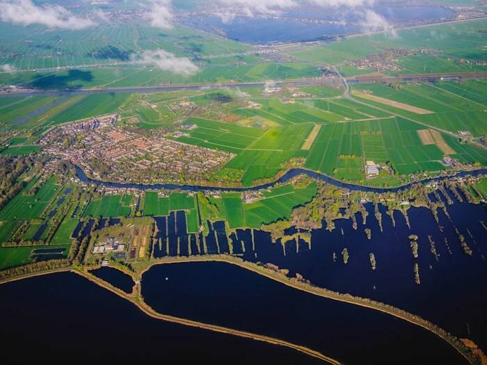
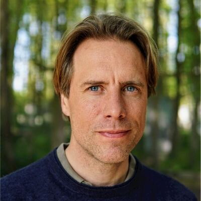

Effecten van aquathermie uit drinkwater (TED)
Onderzoek naar de effecten van warmtewinning uit transportleidingen op ecologie en drinkwaterproductie.
MB-Water helpt organisaties op het gebied van water, klimaat en milieu. Onafhankelijk, resultaatgericht en maatschappelijk betrokken.
Vanuit een sterke inhoudelijke basis adviseert MB-Water over grond- en oppervlaktewater, klimaatadaptatie en mitigatie, en milieu en waterkwaliteit.
MB-Water voert onderzoek uit en draagt bij aan kennisontwikkeling door het publiceren van resultaten. MB-Water helpt organisaties met het opzetten en aansturen van onderzoek- en innovatieprogramma's.
MB-Water ondersteunt organisaties bij het opzetten en aansturen van projecten. Dit begint bij het opstellen van de juiste uitvraag en eindigt pas als de resultaten hebben geleid tot verandering in een organisatie.

Onderzoek naar de effecten van warmtewinning uit transportleidingen op ecologie en drinkwaterproductie.

Ontwikkeling van grondwatermodellen ter ondersteuning van grondwaterbeleid in Punjab en Sindh.

Onderzoek naar de effecten van aquathermie op plankton in oppervlaktewater.

Methode- en dashboardontwikkeling om gevolgen van zoetwatertekorten te kwantificeren.

Onderzoeksprogramma naar de effecten van verzilting op landbouw, natuur en waterbeheer.

Technische aansturing binnen het thema zoetwater van het landelijke kennisprogramma.

Ontwikkeling van een prognosetool voor chloride bij het ruwwaterinnamepunt Andijk.


MB-Water is opgericht door Matthijs Bonte. Matthijs is een breed georiënteerde hydroloog met ervaring bij de Rijksoverheid (ministerie van Infrastructuur en Waterstaat), industrie (Shell Global Solutions), advieswereld (Witteveen+Bos) en wetenschappelijk onderzoek (KWR-Water en VU Amsterdam). Matthijs is gepromoveerd aan de VU Amsterdam op geohydrologie, waterkwaliteit en bodemenergie. Meer informatie over achtergrond en ervaring staat op LinkedIn.
Meer dan 50 publicaties geschreven in zowel peer reviewed journals als vaktijdschriften. Een volledig overzicht staat op Google Scholar. De meeste artikelen zijn beschikbaar via ResearchGate.
Een vraag of een project? Stuur een bericht via het formulier.